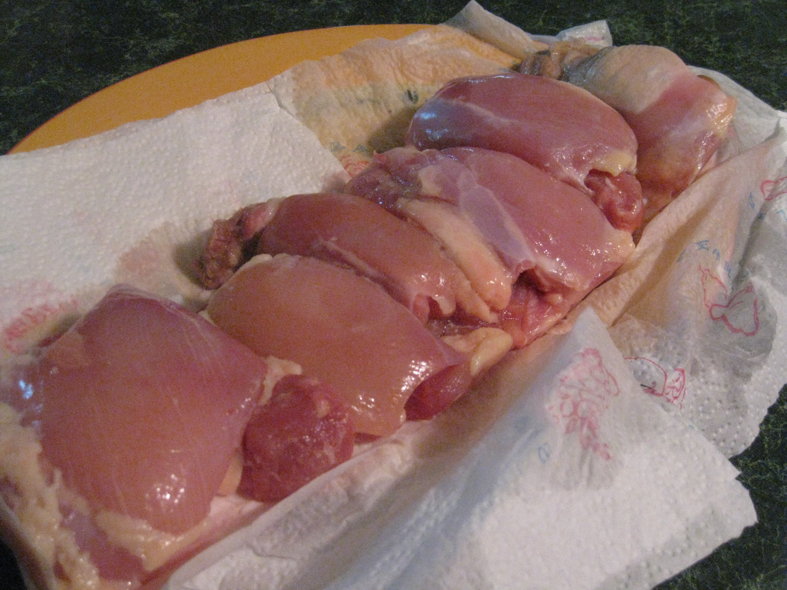
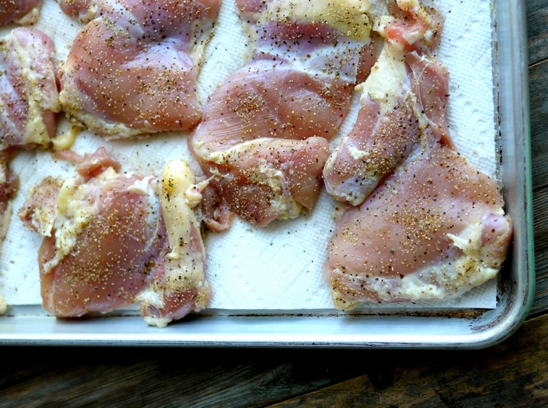
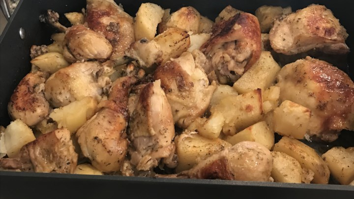
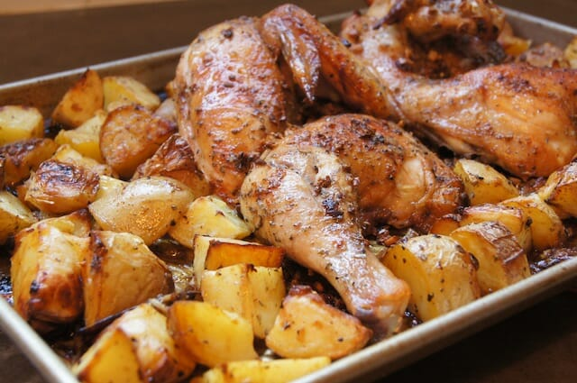

|

Ingredients: 4 pounds chicken thighs, salt, dried oregano, black pepper, dried rosemary, cayenne pepper, 1/2 cup lemon juice, 1/2 cup olive oil, 6 cloves garlic, 3 russet potatoes, 1 cup chicken broth |
|

Season chicken with salt, oregano, pepper, rosemary, and cayenne pepper. Add lemon juice, olive oil, and garlic. Stir potatoes with chicken until evenly coated with marinade. |
|

Bake in the preheated oven for 20 minutes. Toss chicken and potatoes, keeping chicken skin side up; continue baking until chicken is browned and cooked through, about 25 minutes more. |
|

Toss potatoes once again in pan juices. Place pan under broiler and broil until potatoes are caramelized. Transfer potatoes to serving platter with chicken. |